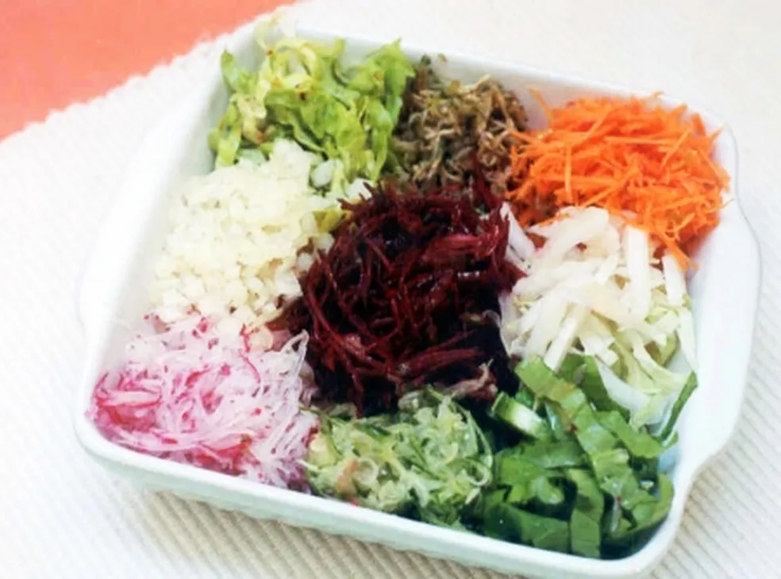

Salada colorida de legumes

INGREDIENTES
- 1 Cenoura ralada
- 2 Jilós ralados
- 1 Cebola ralada
- 1 Beterraba ralada
- 1 Rabanete ralado
- 1 Folha de repolho picada
- 1 Pepino japonês picado
- 3 folhas de alface crespa picadas
- 2 folhas de acelga picadas
- 3 folhas de almeirão picadas
- quanto baste de vinagre branco
- quanto baste de sal
- quanto baste de pimenta-do-reino branca
MODO DE PREPARO
- Misture tudo e tempere a gosto.
INFORMAÇÕES ADICIONAIS
Ótima salada para acompanhar churrasco ou cervejada.